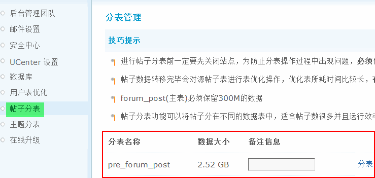
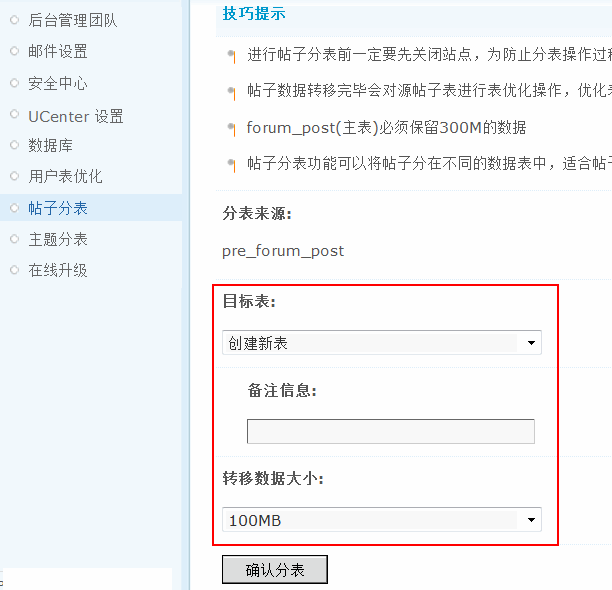

12.5. 帖子分表¶
帖子分表
如何对帖子进行分表和管理
操作路径：【后台】=>【站长】=>【帖子分表】
1、进行帖子分表前一定要先关闭站点，为防止分表操作过程中出现问题，必须做好数据库备份后再进行此操作。 2、forum_post(主表)必须保留300M的数据
第一次访问帖子分表功能，会看到默认拥有一个主表，名称为 pre_forum_post，此表为安装 Discuz! 后的标准帖子表。新添加的表会自动以“pre_forum_post_数字”的方式进行命名，无需人工干预。
如果当前主表内帖子数很多，数据大小已经超过 10G 可以点击主表后的“分表”创建一个新的主表。
分表创建完成后如下图所示：